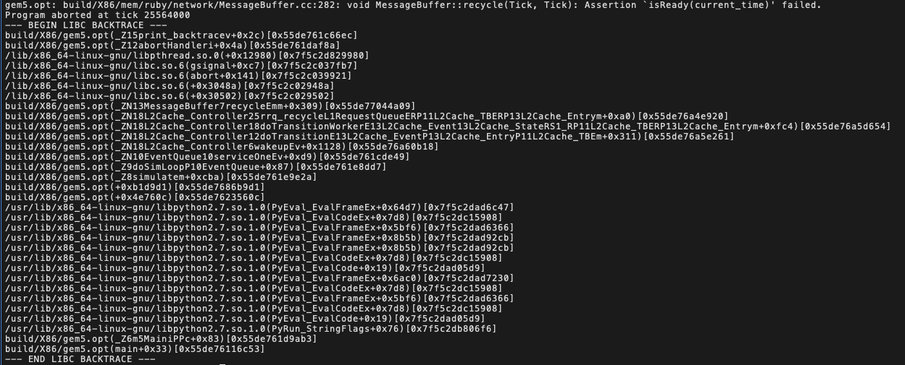

clflush怎么报错了
本文最后更新于：March 18, 2021 pm
Problem
我们定义了一个数组p, 他会被初始化为0，接着我们想要将其flush回memory
因此给出如下代码
#include <stdio.h>
#include <stdint.h>
#ifdef _MSC_VER
#include <intrin.h> /* for rdtscp and clflush */
#pragma optimize("gt",on)
#else
#include <x86intrin.h> /* for rdtscp and clflush */
#endif
int p[64 * 10 + 1];
int main() {
for(int i = 0; i < 10; i++) _mm_clflush(&p[i * 64]);
}这段代码在电脑上可以运行，但是在gem5上会报错(clflush由CleanupSpec实现)

💡Idea
在cleanupSpec的攻击代码中，在flush array2之前，用了如下代码
for (i = 0; i < sizeof(array2); i++)
array2[i] = 1; /* write to array2 so in RAM not copy-on-write zero pages */看其中注释，我合理猜测，之前flush代码的报错和page deduplication有关。
声明了一个全局数组后，他会被自动初始化为0。因为系统中存在共享的zero page，这个全局数组也会在这个共享的zero page上。当我要求flush数组的地址时，先会通过page table翻译成物理地址，这个时候进程会发现他没有flush共享数据的权限，故而报错。因此，要先给这个地址存一个非0值，然后触发copy-on-write, 得到自己私有的page, 这样就会有flush自己数据的权限
泰河里了
验证
1个星期后，我决定验证一下我这个伟大的想法💡
于是我写出了以下代码
根据我的猜想，这份代码给p[0]赋值为1，触发了copy-on-write, 应该可以正常运行
#include <stdio.h>
#include <stdint.h>
#ifdef _MSC_VER
#include <intrin.h> /* for rdtscp and clflush */
#pragma optimize("gt",on)
#else
#include <x86intrin.h> /* for rdtscp and clflush */
#endif
int p[64 * 10 + 1];
int main() {
p[0] = 1;
for(int i = 0; i < 2; i++) _mm_clflush(&p[i * 64]);
}打脸！😅竟然报错了
打开debug-flags, 查看log信息。以下三行是找到的比较重要的信息。
第一条是flush p[0]的log, 可以看到，这个数据在cache中，可以运行
第二条和第三条是flush p[64]的log，第二条说L1中没有tag match的cache line, 第三行是说L2中没有该cacheline。这里引发了报错
25274500: system.ruby.l2_cntrl0: MESI_Two_Level-L2cache.sm:440: Addr: 0xcdd40 is Dirty, Flush Invalidate in L2
25299000: system.ruby.l1_cntrl0: MESI_Two_Level-L1cache.sm:683: RubyRequest FLUSH received at L1 for Addr 0xcde40 25299000: system.ruby.l1_cntrl0.L1Dcache: No tag match for address: 0
25301000: system.ruby.l2_cntrl0: MESI_Two_Level-L2cache.sm:448: Addr: 0xcde40: not present on Flush Invalidate in L2好家伙，那这不是跟cow一点关系都没有吗😅。纯粹就是cache中没有这个数据就会报错吧
继续验证
现在的猜想是cache中没有要flush的数据就会报错。
根据这个猜想写出了两份代码
code1
这份代码没有给p赋值，p数组仍然是0，把他读到cache中，然后flush，结果!不报错!
#include <stdio.h>
#include <stdint.h>
#ifdef _MSC_VER
#include <intrin.h> /* for rdtscp and clflush */
#pragma optimize("gt",on)
#else
#include <x86intrin.h> /* for rdtscp and clflush */
#endif
int p[64 * 10 + 1];
int main() {
int a = p[0], b = p[64];
for(int i = 0; i < 2; i++) _mm_clflush(&p[i * 64]);
}code2
这份代码对p[0] flush了两次，第二次flush时，p[0]不在cache中，结果!报错!
#include <stdio.h>
#include <stdint.h>
#ifdef _MSC_VER
#include <intrin.h> /* for rdtscp and clflush */
#pragma optimize("gt",on)
#else
#include <x86intrin.h> /* for rdtscp and clflush */
#endif
int p[64 * 10 + 1];
int main() {
int a = p[0], b = p[64];
for(int i = 0; i < 2; i++) _mm_clflush(&p[i * 64]);
_mm_clflush(&p[0]);
}我的结论就是
CleaupSpec对clflush的机制是cache中没有要flush的数据就会报错。
本博客所有文章除特别声明外，均采用 CC BY-SA 4.0 协议 ，转载请注明出处！